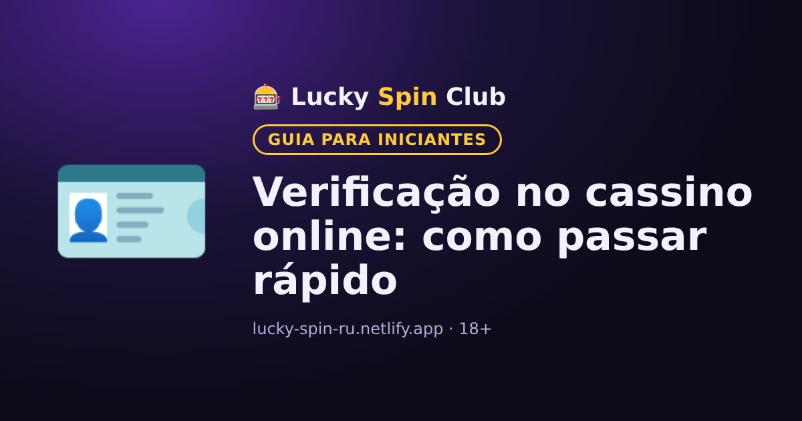

Verificação no cassino online: como passar rápido

Atualizado: 6 de novembro de 2026
A verificação é a confirmação da identidade do jogador. Sem ela, o cassino normalmente não paga os ganhos. Vale a pena fazê-la com antecedência.
Para que serve
Cassinos licenciados precisam conferir a idade dos jogadores (só maiores de 18), combater fraudes e lavagem de dinheiro. Por isso é um procedimento padrão, não desconfiança em relação a você.
Quais documentos podem pedir
- RG, CNH ou passaporte com foto.
- Comprovante de residência, por exemplo uma conta de consumo ou um extrato bancário.
- Comprovante do meio de pagamento, por exemplo uma foto do cartão em que apareçam só os primeiros e os últimos dígitos.
- Às vezes, uma selfie com o documento.
Como passar mais rápido
- No cadastro, use seus dados reais, exatamente como no documento.
- Tire fotos nítidas com boa luz, sem reflexos nem bordas cortadas.
- Envie os documentos pela sua conta no site oficial do cassino.
Por que pode ser recusada
- Os dados do perfil não batem com o documento.
- A foto está ilegível ou o documento está vencido.
- A mesma pessoa tem várias contas.
Envie documentos apenas pelo site do cassino, nunca para desconhecidos em aplicativos de mensagem.
Quer experimentar? O cadastro leva cerca de um minuto.
🎁 Cadastrar e pegar o bônusPerguntas frequentes
Quais documentos pedem na verificação?
Normalmente um documento com foto (como RG ou CNH) e, às vezes, comprovante de residência e do meio de pagamento.
Quanto tempo leva a verificação?
Depende do cassino. Fotos nítidas e dados corretos no perfil ajudam a passar mais rápido.
É seguro enviar documentos?
Envie apenas pela sua conta no site oficial do cassino e nunca para desconhecidos em aplicativos de mensagem.